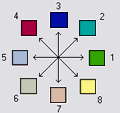

D8 Flow Directions
(c) 2010 by David G. Tarboton
Creates 2 grids. The first contains the flow
direction from each grid cell to one of its adjacent or diagonal neighbors,
calculated using the direction of steepest descent. The second contain the
slope, as evaluated in the direction of steepest descent, and is reported
as drop/distance, i.e. tan of the angle. Flow direction is reported as
"no data" for any grid cell adjacent to the edge of the DEM domain,
or adjacent to a "no data" value in the DEM. In flat areas, flow
directions are assigned away from higher ground and towards lower ground
using the method of Garbrecht and Martz (1997). The D8 flow direction
algorithm may be applied to a DEM that has not had its pits filled, but
it will then result in "e;no data"e; values for flow direction
and slope at the lowest point of each pit.
D8 Flow Direction Coding: 1 — East,
2 — Northeast, 3 — North, 4 — Northwest,
5 — West, 6 — Southwest, 7 — South,
8 — Southeast.

The flow direction routing across flat areas is
performed according to the method described by Garbrecht, J. and L. W.
Martz, (1997), "The Assignment of Drainage Direction Over Flat Surfaces
in Raster Digital Elevation Models", Journal of Hydrology, 193: 204-213.
Parameters
- Number of Processes
Integer
- The number of stripes that the domain will be divided into and the
number of MPI parallel processes that will be spawned to evaluate each
of the stripes.
- Pit Filled Elevation Grid
Raster Grid
- A grid of elevation values. This is usually the output of the
"Pit Remove" tool, in which case it is elevations with pits
removed.
Outputs
- D8 Flow Direction Grid
Raster Grid
- A grid of D8 flow directions which are defined, for each cell, as
the direction of the one of its eight adjacent or diagonal neighbors
with the steepest downward slope.
- D8 Slope Grid
Raster Grid
- A grid giving slope in the D8 flow direction. This is measured as
drop/distance.